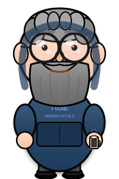
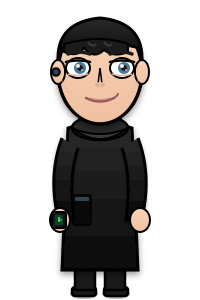

CyberQuest: Hoe Het Gemaakt Werd
slide 0 / 0


📊 Project Metrics
git log
⚡ Commit Velocity
P
Plan
D
Do
C
Check
A
Act
👤 Rein (Mens)
🤖 AI (Copilot)
Ryan
▶ doorgaan
◀ vorige
⏸ pauze
volgende ▶
↺ opnieuw
🔊 voice actief